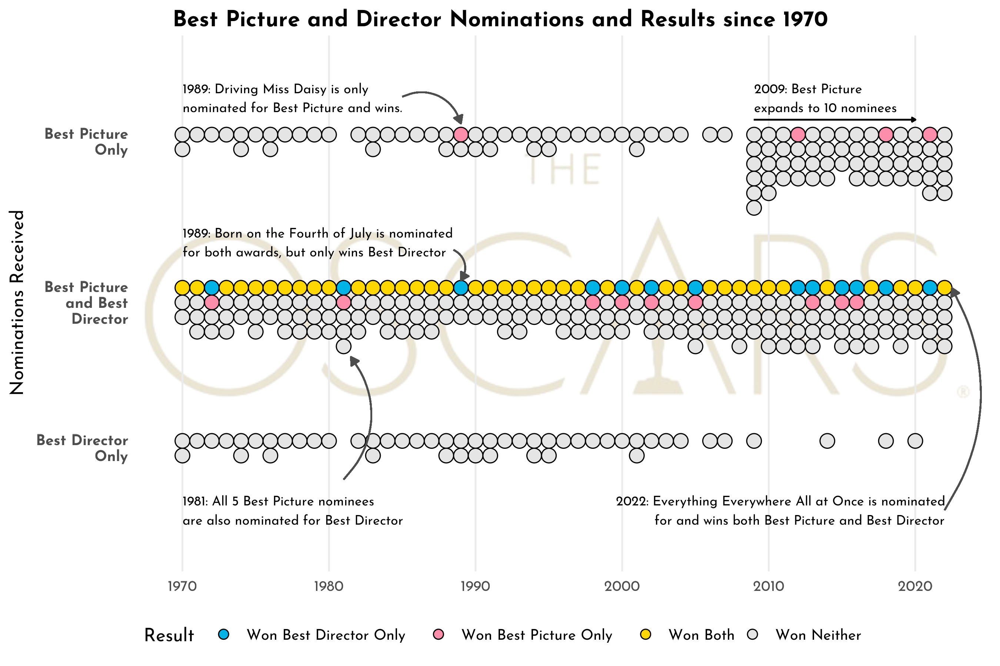
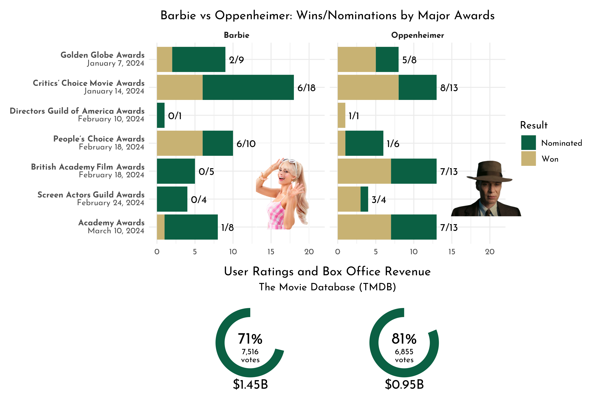
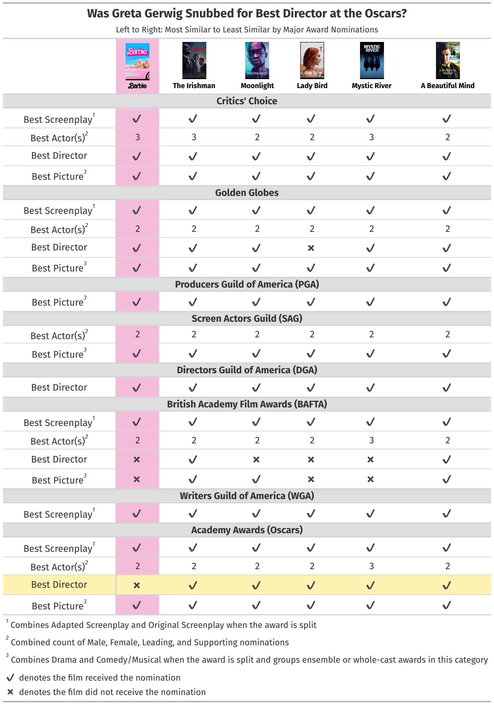
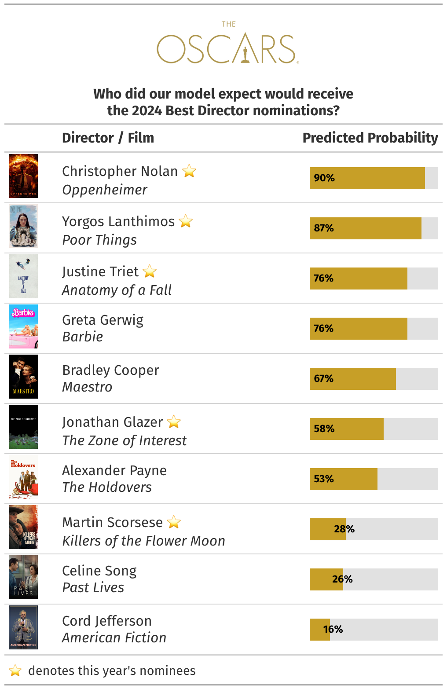
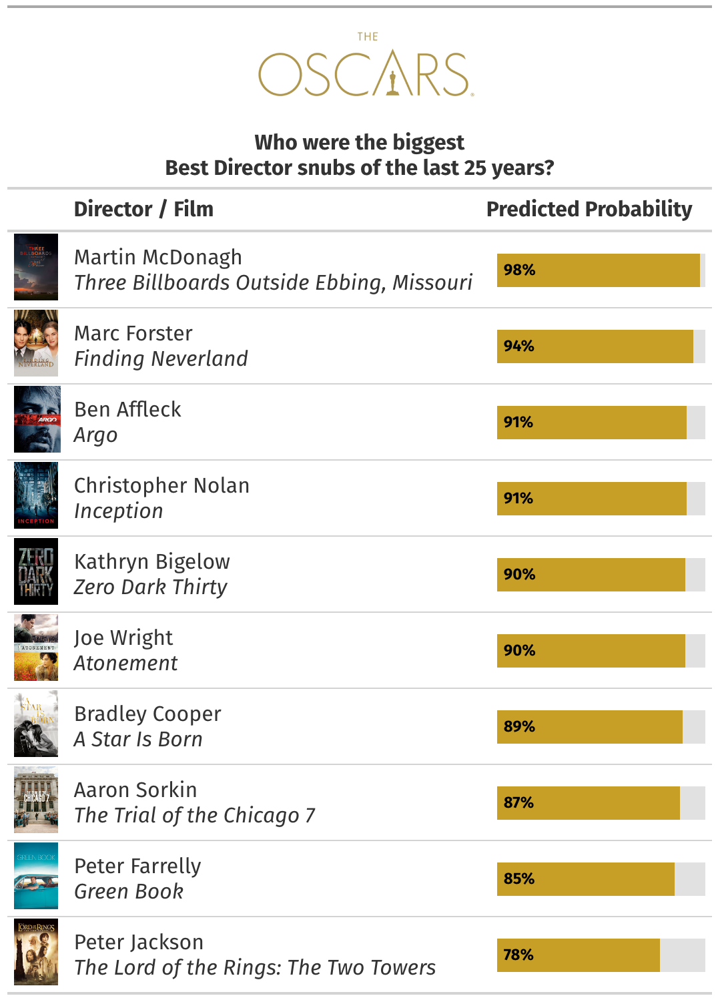

The Data on Barbie, Greta Gerwig, and Best Director Snubs at the Oscars
When the 2024 Academy Award nominees were announced in late January, one of the most hotly discussed topics was that Greta Gerwig, director of Barbie, was not nominated for Best Director, despite the film being nominated for Best Picture. I assumed a Best Director nomination went hand-in-hand with a Best Picture nomination, so how common is it for a film to be nominated for Best Picture, but not Best Director? It turns out, fairly often, at least since 2009.

From 1970 to 2008, the Best Picture and Best Director categories had five nominees each. It was common to see four of the five Best Picture nominees also receiving a nomination for Best Director. And in 32 of these 39 years, the film that won Best Picture also won Best Director.
In 2009, the Best Picture nomination limit increased to 10 films. Best Director remained capped at five, so naturally, this resulted in more Best Director snubs than before. In terms of winners, the larger pool of Best Picture nominees seems to be aiding in separating the two awards. Best Picture and Best Director Oscars have gone to two different films in six of the last 14 years (this happened only seven times in the 39 years before 2009).
Barbenheimer
Although it’s no longer uncommon for a film to receive a Best Picture nomination without one for Best DIrector, Barbie wasn’t just any film. Barbie was one half of the cultural phenomenon known as Barbenheimer. A mashup of two highly anticipated and starkly different films—Barbie, and director Christopher Nolan’s historical biopic Oppenheimer—were both released on July 21, 2023. The goal of seeing both films back-to-back became one of the defining characteristics of the Barbenheimer phenomenon. While both films were hugely successful at the domestic and international box office, Barbie out-grossed Oppenheimer by an estimated half-billion dollars worldwide.
The two films dominated the zeitgeist for much of 2023 and both received enormous critical acclaim. Oppenheimer has dominated this awards season, however, with 13 Oscar nominations garnered and multiple important wins at other film awards ceremonies leading up to the Academy Awards on March 10.
We’ll return to how we think about “importance” in the context of nominations, but for now, let’s compare the two films along the lines of major award ceremonies, ratings, and box office revenue.
Barbie vs Oppenheimer

Minus its take at the People’s Choice Awards, Oppenheimer has taken home more awards overall, despite having a similar number of nominations at most award shows. Barbie appeared to be on a roll this award season, with nominations for picture, director, screenplay, actress, and supporting actor at the Golden Globes and Critics Choice Awards in early January. However, Greta Gerwig was left out of the director category when the Oscar nominees were announced on January 23. This leads to the question, what films are most similar to Barbie, not just by nomination count, but across major categories? And were those films nominated for Best Director?
Movies Like Barbie
We began our Best Director snubs analysis at Flatiron by collecting all past nominees across the entire history of the awards ceremonies noted in the image above—swapping out the People’s Choice Awards for the Writers Guild Awards—for a comprehensive dataset of non-fan nominations. We also merged categories like Best Adapted Screenplay and Best Original Screenplay into one screenplay category for ease of comparison. Similarly, we lumped all acting categories–male, female, lead, and supporting–into one, and all Best Picture categories into one if split into drama and comedy/musical categories (like the Golden Globes does).
With a dataset of over 3,000 nominees going back to the 1920s, we found films most similar to Barbie across our grouped screenplay, grouped actor(s), director, and picture categories using Euclidean distance, a method for finding the distance between two data points. The five films below are the most similar to Barbie according to the awards and groupings we’ve selected. Interestingly, these five films, including Gerwig’s 2017 debut film, Lady Bird, all received a Best Director nomination at the Oscars (while Gerwig’s directing work on Barbie did not).

Predicting Best Director Snubs at the Oscars
A sample size of five is certainly not enough evidence to make a definitive claim of a snub, so we developed a predictive model that classifies a film as a Best Director nominee based on the other nominations it received, either at the Oscars or previous award shows. Our final model achieved 91% accuracy. For the astute reader, it also reached 93% precision and 96% recall.
Based on films from 1927 to 2022, the best predictor of a Best Director nomination at the Oscars is a Best Picture nomination at the Oscars. This isn’t surprising, considering the overlap in nominees that we observed in the first image at the top of the article.
Other notable predictors are Best Screenplay at the Oscars or Critics Choice Awards, and Best Director at the Golden Globes or Director’s Guild Awards (DGA). These predictors align with intuition, given the importance of a good script and how common it is to have a filmmaker with the title of writer/director. In the case of the DGA, it’s hard to think of a more qualified group to identify the best directors of the year than the 19,000-plus directors who make up the guild’s membership
Finally, using our trained model, we applied it to our list of 2023 films that received at least one nomination in a screenplay, acting, directing, or picture category. Given the long list of accolades received by Barbie at the Golden Globes, Critics Choice Awards, British Academy Film Awards (BAFTA), and all the filmmaking guild awards, our model predicted Greta Gerwig to have a 76% chance of snagging a Best Director nomination. Considering she was in third, just behind Christopher Nolan for Oppenheimer and Yorgos Lanthimos for Poor Things, I’d call this a snub. (Gerwig tied for third with Justine Triet for Anatomy of a Fall.)

Best Director Snubs: Flatiron’s Choice
Rank-ordering the predicted probability of receiving the directorial nomination, the 2017 film Three Billboards Outside Ebbing, Missouri by writer/director Martin McDonagh was our model’s biggest snub. A film that initially received wide acclaim, it later faced criticism over its portrayal of misogyny and racism. Coincidentally, Greta Gerwig was one of the five directors nominees that year alongside Guillermo del Toro, Christopher Nolan, Jordan Peele, and Paul Thomas Anderson—a star-studded list of filmmakers if ever there was one.

Final Thoughts
As with all predictive models, our model is only as good as the data it learns from. A common criticism of the Academy is its lack of nominating women and people of color across categories, particularly for Best Director. Mitigating bias and ensuring fairness in predictive models are important concepts in Big Data Ethics, but we’ll save the ways one could address these issues for another post.